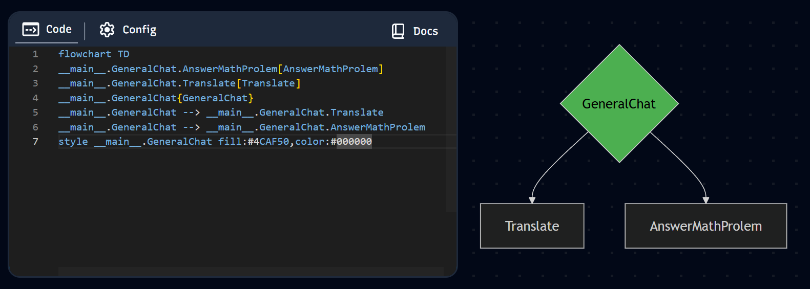
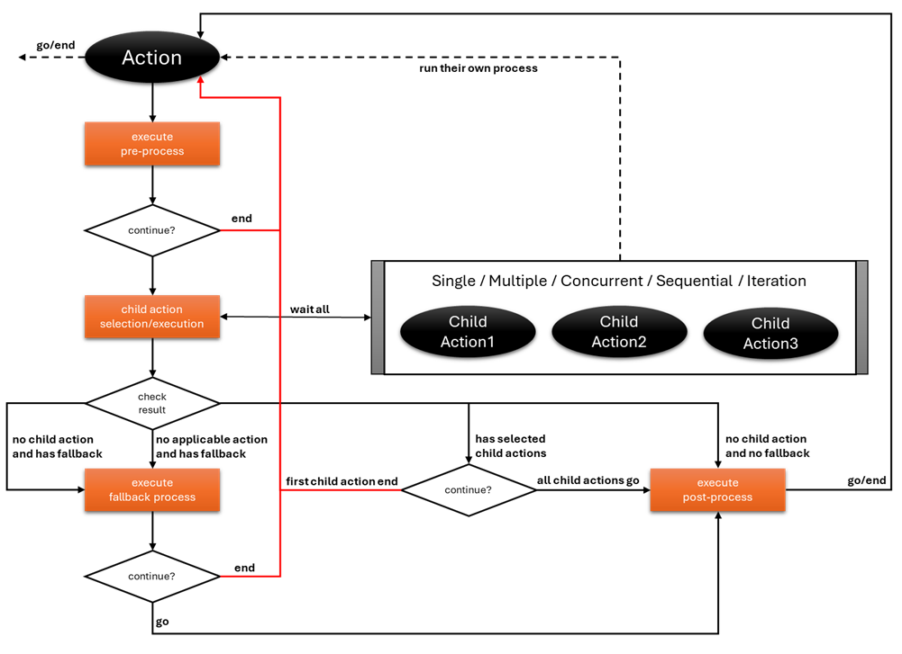
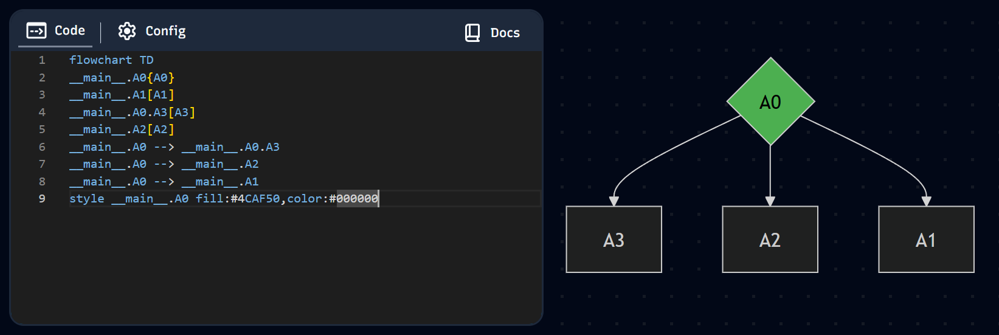
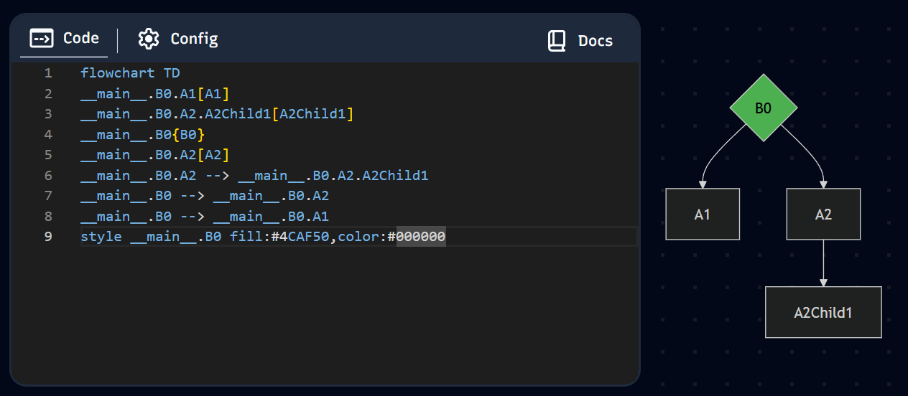
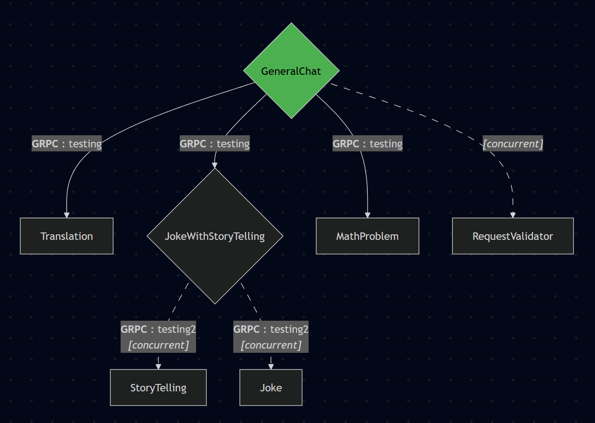
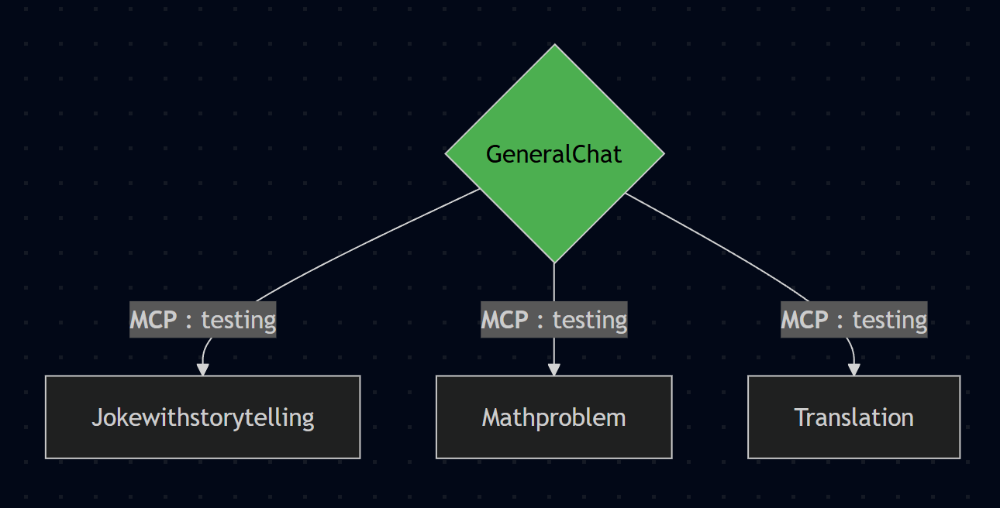

PyBotchi
Build scalable AI agent systems with ease
A modern Python library for orchestrating multi-agent AI systems. Design and deploy agents that are inherently lightest, fastest, and most customizable. Leverage a modular, framework-agnostic, and scalable architecture to build intelligent agents that work together to solve complex problems.
Lightweight Architecture
The entire system is built upon a minimal foundation of just
three core classes: Action (the central agent with
a defined lifecycle), Context (the universal
container for conversational state and metadata), and
LLM (a singleton client for managing your model
connection). This lean design minimizes overhead, ensuring
extreme speed and efficiency.
Object-Oriented Design
Achieves maximum customizability through a powerful
Object-Oriented structure. All base classes inherit from
Pydantic BaseModel, ensuring rigorous data
validation and adherence to industry-standard type hinting. This
foundation makes every component inherently overridable and
extendable to precisely match complex requirements.
JSON Schema Native
Built on Pydantic BaseModel, every Action
automatically conforms to JSON Schema standards used by OpenAI,
Gemini, and other LLM providers for tool calling. Anthropic
requires minor adjustments, but with PyBotchi's overridable
architecture, you can easily adapt to any provider's
specification without compromising the core design.
Action Lifecycle Hooks
The base Action class provides essential lifecycle
events (hooks) that developers can easily override or catch.
This allows for precise control over the agent's behavior at
critical points—such as before execution, after execution, or
upon failure—greatly simplifying state management, logging, and
error handling.
Highly Scalable
The system is built on an async-first architecture, maximizing concurrency and I/O efficiency. Leveraging this, along with its modularity and graph structure, the architecture is primed for distributed scaling. Agents can be deployed remotely or across different machines to isolate resources, optimize performance, and effortlessly handle massive, parallel workloads.
Truly Modular
Agents are developed as isolated, self-contained units. This means different teams can independently develop, improve, or modify specific agents without impacting the system's core logic. Any agent can function as a standalone unit, a subordinate in a workflow, or a Master Agent.
Graph By Design
The architecture enforces a structured parent-child relationship for agent orchestration. Agents are declared within a graph-like structure, explicitly defining potential task flow and delegation paths. This structure provides clear visibility into system execution and state even during development, simplifying debugging, testing, and complex multi-agent reasoning.
Framework & Model Agnostic
The inherent Object-Oriented nature ensures true agnosticism. By prioritizing overridability in every base class, the library allows developers to bypass default implementations entirely, catering to any specific LLM client, third-party framework, or unique business requirement without architectural restriction.
Installation
PyBotchi requires Python 3.12 or higher. Install using pip:
pip install pybotchiOptional Dependencies
For additional features, install optional dependencies:
# With grpc support
pip install pybotchi[grpc]
# With mcp support
pip install pybotchi[mcp]
# With both
pip install pybotchi[grpc,mcp]From Source
To install the latest development version:
git clone https://github.com/amadolid/pybotchi.git
cd pybotchi
pip install -e .
# pip install -e .[grpc]
# pip install -e .[mcp]
# pip install -e .[grpc,mcp]Quick Start
Get up and running with PyBotchi in minutes. Here's a simple example to create your first agent:
Declare your base LLM
This base LLM instance will be used for tool-selection (or child-selection).
from langchain_openai import AzureChatOpenAI
from pybotchi import LLM
LLM.add(
base=AzureChatOpenAI(
api_key="{{CHAT_KEY}}",
azure_endpoint="{{CHAT_ENDPOINT}}",
azure_deployment="{{CHAT_DEPLOYMENT}}",
model="{{CHAT_MODEL}}",
api_version="{{CHAT_VERSION}}",
temperature={{CHAT_TEMPERATURE}},
stream_usage=True,
)
)Declare your master agent
Get up and running with PyBotchi in minutes. Here's a simple example to create your first agent:
from pybotchi import Action, ActionReturn, Context
from pydantic import Field
# previous imports and code ...
class GeneralChat(Action):
"""Casual Generic Chat."""
class AnswerMathProlem(Action):
"""Answer math problem."""
answer: str = Field(description="The answer to the math problem")
async def pre(self, context: Context) -> ActionReturn:
"""Execute pre process."""
await context.add_response(self, self.answer)
return ActionReturn.GO
class Translate(Action):
"""Translate query to requested language."""
translation: str = Field(description="The translation of the query")
async def pre(self, context: Context) -> ActionReturn:
"""Execute pre process."""
await context.add_response(self, self.translation)
return ActionReturn.GOInitialize your context
from pybotchi import Context
context = Context(
prompts=[
{
"role": "system",
"content": """
You're an AI the can solve math problem and translate any request.
Your primary focus is to prioritize tool usage and efficiently handle multiple tool calls, including invoking the same tool multiple times if necessary.
Ensure that all relevant tools are effectively utilized and properly sequenced to accurately and comprehensively address the user's inquiry.
""",
},
{
"role": "user",
"content": "4 x 4 and explain your answer in filipino",
},
],
)Run your master agent
Start your agent using asyncio.
from asyncio import run
from json import dumps
from pybotchi import graph
# previous imports and code ...
async def main():
action, _ = await context.start(GeneralChat)
print(dumps(context.prompts, indent=4))
print(dumps(action.serialize(), indent=4))
general_chat_graph = await graph(GeneralChat)
print(general_chat_graph.flowchart())
run(main())
Result:
[
{
"role": "system",
"content": "You're an AI the can solve math problem and translate any request.\n\nYour primary focus is to prioritize tool usage and efficiently handle multiple tool calls, including invoking the same tool multiple times if necessary.\nEnsure that all relevant tools are effectively utilized and properly sequenced to accurately and comprehensively address the user's inquiry."
},
{
"role": "user",
"content": "4 x 4 and explain your answer in filipino"
},
{
"content": "",
"role": "assistant",
"tool_calls": [
{
"id": "call_ea7e65251a02464ba1c60d403748dae4",
"function": {
"name": "AnswerMathProlem",
"arguments": "{\"answer\":\"4 x 4\"}"
},
"type": "function"
}
]
},
{
"content": "4 x 4",
"role": "tool",
"tool_call_id": "call_ea7e65251a02464ba1c60d403748dae4"
},
{
"content": "",
"role": "assistant",
"tool_calls": [
{
"id": "call_fd071414f57d4320a2359be6e4a6497c",
"function": {
"name": "Translate",
"arguments": "{\"translation\":\"Ang 4 x 4 ay 16 dahil kapag minultiply mo ang apat sa apat, ang sagot ay labing anim.\"}"
},
"type": "function"
}
]
},
{
"content": "Ang 4 x 4 ay 16 dahil kapag minultiply mo ang apat sa apat, ang sagot ay labing anim.",
"role": "tool",
"tool_call_id": "call_fd071414f57d4320a2359be6e4a6497c"
}
]
{
"name": "GeneralChat",
"args": {},
"usages": [
{
"name": "$tool",
"model": "gpt-4.1",
"usage": {
"input_tokens": 316,
"output_tokens": 76,
"total_tokens": 392,
"input_token_details": {
"audio": 0,
"cache_read": 0
},
"output_token_details": {
"audio": 0,
"reasoning": 0
}
}
}
],
"actions": [
{
"name": "AnswerMathProlem",
"args": {
"answer": "4 x 4"
},
"usages": [],
"actions": []
},
{
"name": "Translate",
"args": {
"translation": "Ang 4 x 4 ay 16 dahil kapag minultiply mo ang apat sa apat, ang sagot ay labing anim."
},
"usages": [],
"actions": []
}
]
}
flowchart TD
__main__.GeneralChat.AnswerMathProlem[AnswerMathProlem]
__main__.GeneralChat.Translate[Translate]
__main__.GeneralChat{GeneralChat}
__main__.GeneralChat --> __main__.GeneralChat.Translate
__main__.GeneralChat --> __main__.GeneralChat.AnswerMathProlem
style __main__.GeneralChat fill:#4CAF50,color:#000000Mermaid-JS Flowchart

How It Works
Understanding the philosophy and architecture behind PyBotchi
Why PyBotchi Exists
Traditional Coding Already Works
We've been building complex systems across every industry using traditional development approaches since the beginning of computing. Every application challenge has been solved deterministically through well-structured code, APIs, and events.
The Critical Gap: Natural Language Translation
The real limitation isn't in execution—it's in translation. Traditional systems require users to know specific structures, APIs, and interfaces. Every action needs dedicated endpoints. What if we could accept natural language and automatically route to the right logic?
LLMs as Translators, Not Replacements
Many frameworks try to replace traditional development with LLM-driven logic. PyBotchi takes a different approach: LLMs excel at understanding intent and translating between human and computer language—not at business logic, calculations, or deterministic execution. Let each do what it does best.
The PyBotchi Workflow
Detect & Translate
LLM processes natural language input to extract intents and identify the appropriate Action with its arguments.
LLM LayerExecute Logic
Traditional code handles business logic, calculations, and data processing—the deterministic work computers do best.
Your CodeGenerate Response
LLM transforms processed results back into natural language for human-friendly communication.
LLM LayerThe Action Lifecycle Architecture

Hierarchical action execution with parent-child relationships
How the Lifecycle Works
Every Action in PyBotchi follows a structured lifecycle that gives you complete control over execution flow. This lifecycle enables precise orchestration of multi-agent systems while maintaining clean, maintainable code.
Pre-Execution
The Action's pre hook runs before any child
agent selection. This is where you implement business logic,
validation, data gathering (RAG, knowledge graphs), tool
execution, or any custom processing. You have complete
freedom—use traditional code, call external APIs, or
integrate other frameworks.
Child Selection
After pre-execution, the system determines which child Actions to execute next. You can let the LLM decide via tool calling, or override this entirely with traditional logic (if/else, switch cases). The choice is yours—use AI routing when it makes sense, use deterministic code when it doesn't.
Child Execution
Selected child Actions run through their own complete lifecycle. They maintain references to their parent (the Action that called them) and can access sibling Actions executed alongside them. This creates a hierarchical execution tree that's automatically tracked and traceable.
Post-Processing
The post hook runs after all child executions
complete. Use it to consolidate results, save data, perform
cleanup, logging, or prepare the final response. Like
pre-execution, you have complete freedom to implement any
logic needed.
Additional Lifecycle Hooks
Handle errors, implement retry logic, log issues, or re-raise for parent handling.
Triggered when no child is selected—handle non-tool responses or default behaviors.
Control what data merges back to the main context—useful for reactive agents.
Why This Matters
This lifecycle gives you the best of both worlds: structured orchestration with complete flexibility. Use LLMs for intent detection and routing, but keep your business logic where it belongs—in well-tested, deterministic code. Override any hook, inject custom logic at any stage, and maintain full control over your system's behavior.
🏗️ Self-Documenting Graph
Your code IS the architecture. Declare child Actions as class attributes and the execution graph emerges naturally. No separate diagramming tools, no manual synchronization—the graph structure is inherent in your code and always accurate.
🔄 Living Architecture
Add, remove, or swap agents at runtime without system restarts. Access parent context and sibling state during execution. Your agent system adapts to changing requirements without architectural rewrites.
⚡ True Customization
Override ANY hook with your own logic. Replace LLM routing with traditional if/else when needed. Integrate any framework, call any API, implement any business rule—PyBotchi enforces structure, not limitations.
🎯 Team Scalability
Different teams can build isolated agents independently. No merge conflicts in graph definitions, no stepping on each other's code. Deploy agents separately, test in isolation, integrate seamlessly.
The Core Philosophy
PyBotchi doesn't replace your code—it enhances it. By letting LLMs handle what they're good at (understanding intent) and letting your code handle what it's good at (executing logic), you get the best of both worlds: the flexibility of natural language with the reliability of deterministic execution.
OOP-Driven Agent Customization
Customize your agent by utilizing
Object-Oriented Programming practices
Inheritance
Overrides & Extensions
from typing import ClassVar
from pybotchi import Action, graph
class A1(Action):
"""Doc 1."""
class A2(Action):
"""Doc 2."""
# Declare Agent with A1 & A2 as child Actions
class A0(Action):
"""Maid doc."""
A1: ClassVar = A1
A2: ClassVar = A2
# OR
# class A1(A1):
# pass
# class A2(A2):
# pass
# Additional Agents
class A3(Action):
"""Doc 3."""
class A4(Action):
"""Doc 4."""
# override print method
def print(self) -> None:
"""Print some value."""
print("A0")
# Modify A0 docstring
class B0(A0):
"""Modified Main doc."""
# replace A1
class A1(Action):
"""Different Doc 1."""
# extend A2 to add new child agent and replace docstring
class A2(A0.A2):
"""Modified Doc 2."""
class A2Child1(Action):
"""Child Doc 1."""
# remove A3
A3: ClassVar = None
# override print method
def print(self) -> None:
"""Print some value."""
print("B0")
# Not recommended but it's supported
# Remove A4 from A0 and this will propagate to every derived classes
A0.remove_child("A4")


Abstractions & Polymorphism
Though not commonly used in python, incorporating this approach significantly improves long-term design quality and maintainability.
from abc import ABC, abstractmethod
from aiofiles import open as aio_open
from pybotchi import Action
class FileUpdateAction(Action, ABC):
"""File Update Abstract Action."""
@abstractmethod
async def read_file(self, path: str) -> str:
"""Read file by path."""
pass
class FileUpdate(FileUpdateAction):
"""File Update Abstract Action."""
async def read_file(self, path: str) -> str:
"""Read file by path."""
with open(path, 'r') as f:
return f.read()
class AsyncFileUpdate(FileUpdateAction):
"""File Update Abstract Action."""
async def read_file(self, path: str) -> str:
"""Read file by path."""
async with aio_open(path, 'r') as f:
return await f.read()
Encapsulation
PrivateAttr
feature. This allows you to hide internal attributes from the
model's standard output and serialization.
from pybotchi import Action
from pydantic import Field, PrivateAttr
class Agent(Action):
"""Agent."""
value: str = Field(description="some value")
_private_value: str = PrivateAttr(default="some value")Life Cycle Hooks
The purpose of Life Cycle Hooks is to give developers fine-grained
control over the various stages of an agent's or workflow's
execution. They act as specific, reliable points where you can
inject custom business logic, handle data, manage errors, and
control the flow, ensuring the agent behaves exactly as intended
from preparation to completion.
This control allows for more
complex, robust, and customized agent architectures.
pre
Executes before child agents run, allowing preparation, validation, and data gathering.
- Guardrails and validation before execution
- Data gathering (RAG, knowledge graphs, etc.)
- Business logic, tool execution, or preprocessing
- Logging and notifications
from itertools import islice
from pybotchi import Action, ActionReturn, Context
from pydantic import Field
class Translate(Action):
"""Translate query to requested language."""
language: str = Field(description="Target language.")
async def pre(self, context: Context) -> ActionReturn:
"""Execute pre process."""
# use base llm instance to invoke completion base on your requirements
message = await context.llm.ainvoke(
# Override system prompt to make your agent more specialized
[
{
"content": f"You are a specialized agent for translating the user's query to {self.language}",
"role": "system",
},
*islice(context.prompts, 1, None),
]
)
# push message.text to your conversational prompt context
await context.add_response(self, message.text)
# All process here are optional and overridable
# You may do something else here like calling other framework/library
# You may call langgraph ainvoke
# You may call crewai kickoff_async
# You may call OpenAI REST API directly
# You may do guardrails before executing any commands
# No restriction at all
return ActionReturn.GO
# You can return ActionReturn.END if there's another agent or child to be executed and you already want to stop the workflow
# You can return ActionReturn.BREAK if it's part of iteration agent and you only need to break the loop and continue on next executionpost
Executes after child agents complete, handling result consolidation and cleanup.
- Consolidate results from child agent executions
- Data persistence (RAG, knowledge graphs, etc.)
- Cleanup and recording processes
- Logging and notifications
from pybotchi import Action, ActionReturn, Context
class GeneratePresentation(Action):
"""Generate presentation based on user's query."""
# your attributes ...
# your pre execution method ...
# your child actions ...
async def post(self, context: Context) -> ActionReturn:
"""Execute post process."""
# use base llm instance to invoke completion base on your requirements
message = await context.llm.ainvoke(
# Override system prompt to make your agent more specialized
[
{
"content": f"You are a specialized agent for for generating closing remarks.",
"role": "system",
},
*islice(context.prompts, 1, None),
]
)
# push message.text to your conversational prompt context
await context.add_response(self, message.text)
# All process here are optional and overridable
# You may do something else here like calling other framework/library
# You may call langgraph ainvoke
# You may call crewai kickoff_async
# You may call OpenAI REST API directly
# You may do guardrails after executing all
# Save data to db
# Do cleanups
# No restriction at all
return ActionReturn.GO
# You can return ActionReturn.END if there's another agent or child to be executed and you already want to stop the workflow
# You can return ActionReturn.BREAK if it's part of iteration agent and you only need to break the loop and continue on next executionon_error
Handles errors during execution with retry logic or custom error handling.
- Error handling and retry mechanisms
- Logging and notifications
- Re-raise errors for parent agent handling
from pybotchi import Action, ActionReturn, Context
class GeneratePresentation(Action):
"""Generate presentation based on user's query."""
# your attributes ...
# your pre execution method ...
# your post execution method ...
# your child actions ...
async def on_error(self, context: Context, exception: Exception) -> ActionReturn:
"""Execute on error process."""
# Consume exception Here
# Check for type or attributes then execute their respective full back process
# Example:
match exception:
case ConnectionError():
print("Network connection failed")
fallback1()
case TimeoutError():
print("Request timed out")
fallback2()
case _:
print(f"Unexpected error: {type(e).__name__}: {e}")
fallback3()
# Optional re-raise
raise efallback
Executes when no child agent is selected, handling non-tool-call results.
- Process text content results from tool calls
- Allow non-tool-call result handling
- Logging and notifications
from pybotchi import Action, ActionReturn, ChatRole, Context
class GeneratePresentation(Action):
"""Generate presentation based on user's query."""
# your attributes ...
# your pre execution method ...
# your post execution method ...
# your child actions ...
async def fallback(self, context: Context, content: str) -> ActionReturn:
"""Execute fallback process."""
# You can just add the content as response
await context.add_response(self, content)
# or
# await context.add_message(ChatRole.ASSISTANT, content)
return ActionReturn.GO
# or
# return ActionReturn.ENDchild_selection
Determines which child agents to execute, can be overridden with custom logic.
- Override with traditional control flow (if/else, switch/case)
- Custom agent selection logic
- Return declared or undeclared child agents
from pybotchi import Action, ActionReturn, ChatRole, Context
class GeneratePresentation(Action):
"""Generate presentation based on user's query."""
# your attributes ...
# your pre execution method ...
# your post execution method ...
# your child actions ...
async def child_selection(
self,
context: Context,
child_actions: ChildActions | None = None,
) -> tuple[list["Action"], str]:
"""Execute tool selection process."""
# By default, child_actions will hold the current set of child actions.
# It's only possibly None if the method was called by an overridden process that doesn't maintain the child_actions reference.
# If it is None, the lines below will automatically retrieve the actions.
if child_actions is None:
child_actions = await self.get_child_actions(context)
# Override the selection here.
# Use if/else, match/case, or an LLM tool call.
# context.prompts holds the conversational data.
# context.metadata holds additional context.
# context.llm is the default BaseChatModel for your tool call invocation.
message = await context.llm.ainvoke(...)
# Select the next actions based on your result.
next_actions = [
child_actions[call["name"]](**call["args"]) for call in message.tool_calls
]
# message.text is for a fallback process in case tool_calls is empty.
return next_actions, message.text
# Alternatively:
# return [SomeAction()], "Your fallback message"commit_context
The final lifecycle event that controls context merging with the main execution context.
- Detach and clone current context for isolated execution
- Control which data merges with main context
- Useful for reactive agents that only need final results
from pybotchi import Action, ActionReturn, ChatRole, Context
class GeneratePresentation(Action):
"""Generate presentation based on user's query."""
# optional attribute to enable iteration
__max_child_iteration__ = 5
# your attributes ...
# your pre execution method ...
# your post execution method ...
# your child actions ...
async def commit_context(self, parent: Context, child: Context) -> None:
"""Execute commit context if it's detached."""
# The default implementation will merge usages.
await super().commit_context(parent, child)
# Include additional data merging or logging here.
# Transfer context.prompts, metadata, or any other important information.Extended Life Cycle Hooks
pre_mcp
Executes before MCP server connection for
MCPAction agents only.
- Construct MCP server connection arguments
- Refresh expired credentials or tokens
- Guardrails and validation before connection
from pybotchi import ActionReturn
from pybotchi.mcp import MCPAction, MCPConnection, MCPContext
class JiraRequestAction(MCPAction):
"""Trigger Atlassian Jira related request."""
__mcp_connections__ = [
MCPConnection("jira", "SSE", "https://mcp.atlassian.com/v1/sse")
]
# your attributes ...
# your pre execution method ...
# your post execution method ...
# your child actions ...
async def pre_mcp(self, context: MCPContext) -> ActionReturn:
"""Execute pre process."""
if not (integration := context.integrations.get("jira")):
raise NotImplementedError("Feature not yet implemented!")
# Implement guardrails or additional validation for custom security checks.
# Implement business logic to generate a user token or refresh an existing one
# Use Context overrides here to integrate your specific data requirements
# Optionally adjust headers for MCP arguments for the duration of this context.
integration["config"]["headers"] = {"Authorization": "Bearer {{access_token}}"}
# Optionally override allowed_tools for the duration of this context.
integration["allowed_tools"] = {
"Action1",
"Action2",
}
return ActionReturn.GOpre_grpc
Executes before GRPC server connection for
GRPCAction agents only.
- Construct GRPC server connection arguments
- Refresh expired credentials or tokens
- Guardrails and validation before connection
from pybotchi import ActionReturn
from pybotchi.grpc import GRPCAction, GRPCConnection, GRPCContext
class GeneralChat(GRPCAction):
"""Casual Generic Chat."""
__grpc_connections__ = [GRPCConnection("testing", "localhost:50051", "group-1")]
# your attributes ...
# your pre execution method ...
# your post execution method ...
# your child actions ...
async def pre_grpc(self, context: GRPCContext) -> ActionReturn:
"""Execute pre grpc execution."""
if not (integration := context.integrations.get("testing")):
raise NotImplementedError("Feature not yet implemented!")
# Implement guardrails or additional validation for custom security checks.
# Implement business logic to generate a user token or refresh an existing one
# Use Context overrides here to integrate your specific data requirements
# Optionally Adjust GRPC connection arguments and additional configuration for the duration of this context.
integration["config"]["metadata"] = {
"additional_field_to_be": "included in invocation_metadata"
}
integration["config"]["group"] = "override the group"
integration["allowed_tools"] = {
"Action1",
"Action2",
}
return ActionReturn.GOgRPC (Scaling)
PyBotchi's gRPC support enables true distributed scaling by allowing a PyBotchi client to connect to remote PyBotchi servers over gRPC. This lets you distribute compute resources per Action (or per group of Actions) while maintaining execution as a single unified graph.
Real-Time Context Synchronization
When an Action executes through a gRPC connection, PyBotchi maintains bidirectional context synchronization between client and server throughout the execution lifecycle.
- Server → Client: When the remote server adds responses or updates context, changes propagate back to the client in real-time.
- Client → Server: When the client updates context during an active connection, changes flow to the server immediately.
- No polling required: Context stays synchronized through the persistent gRPC connection—no polling loops, background jobs, or coordination overhead.
- No database dependency: State synchronization happens directly through the connection without requiring external storage for coordination.
Why This Matters
Most distributed agent frameworks force you to choose between two painful options: implement polling loops with databases for state management, or lose the ability for agents to collaborate during execution. PyBotchi's gRPC mode eliminates this tradeoff entirely.
Context synchronization is
fully customizable—control exactly which data
propagates (prompts, metadata, usage stats, or custom fields) and
when it syncs. Override commit_context to implement
selective propagation rules that match your architecture.
Concurrent Execution Support
gRPC Actions fully support
concurrent execution just like local Actions.
Enable concurrent child execution by setting
__concurrent__ to control parallel processing across
remote servers.
Via Remote Action Configuration
from pybotchi import Action, ActionReturn, ChatRole
from pybotchi.grpc import GRPCContext
from pydantic import Field
class MathProblem(Action):
"""Solve the math problem."""
# Action will run concurrently
__concurrent__ = True
__groups__ = {"grpc": {"group-1"}}
equation: str = Field(description="The mathematical equation to solve (e.g., '2x + 5')")
async def pre(self, context: GRPCContext) -> ActionReturn:
"""Execute pre process."""
message = await context.llm.ainvoke(f"Solve `{self.equation}`")
await context.add_response(self, message.text)
return ActionReturn.GOVia Local Action Override
from pybotchi.grpc import GRPCAction, GRPCConnection, GRPCRemoteAction
class GeneralChat(GRPCAction):
"""Casual Generic Chat."""
__grpc_connections__ = [GRPCConnection("testing", "localhost:50051", ["group-1"])]
class MathProblem(GRPCRemoteAction):
# This overrides the remote action configuration and can be used to switch concurrent remote actions to sequential execution (ex: __concurrent__ = False)
__concurrent__ = TrueThis enables true parallel distributed execution—multiple remote Actions can run simultaneously on different servers, with context automatically synchronized back to the client as each completes.
Core Capabilities
Unified Graph Execution
Remote Actions integrate seamlessly into your execution graph. Parent-child relationships, lifecycle hooks, and context flow work identically whether Actions run locally or remotely.
Targeted Resource Allocation
Deploy compute-intensive Actions (RAG, embeddings, inference) on GPU servers, I/O-bound Actions (scraping, APIs) on separate workers, and coordination logic on lightweight clients.
Zero-Overhead Synchronization
Context updates propagate through persistent connections during execution. No polling loops, no sync jobs, no coordination overhead—just direct communication between client and server.
Database-Free Architecture
Eliminate the need for external databases or message queues solely for state coordination. Context syncs directly through gRPC connections, simplifying your infrastructure.
Concurrent Remote Execution
Execute multiple remote Actions in parallel across different
servers. Enable __concurrent__ for true distributed
parallel processing with automatic context aggregation.
Complete Customization
Override connection behavior, authentication flow, context propagation rules, and execution lifecycle. Adapt gRPC integration to match your security, networking, and architectural requirements.
When to Use gRPC
- Resource-intensive Actions: RAG pipelines, vector searches, model inference, or long-running computations that benefit from dedicated hardware (GPUs, high-memory instances).
- Resource isolation: Separate CPU/GPU/memory allocation per Action group to prevent resource contention and improve reliability.
- Horizontal scaling: Deploy multiple servers hosting specialized Action groups, with automatic load distribution across instances.
- Team independence: Different teams deploy and scale their Actions independently without coordinating deployments or risking graph breakage.
- Cost optimization: Run expensive operations on spot instances or specialized hardware only when needed, while keeping coordination logic on cheaper infrastructure.
- Fault isolation: Contain failures to specific Action groups—a crashed remote Action doesn't take down your entire system.
Complete Example
This example demonstrates a distributed setup with nested gRPC connections, concurrent execution, and bidirectional context synchronization.
server.py - Remote Action Definitions
from os import getenv
from dotenv import load_dotenv
from langchain_openai import AzureChatOpenAI
from pybotchi import Action, ActionReturn, ChatRole, LLM
from pybotchi.grpc import GRPCAction, GRPCConnection, GRPCContext
from pydantic import Field
load_dotenv()
LLM.add(
base=AzureChatOpenAI(
api_key=getenv("CHAT_KEY"), # type: ignore[arg-type]
azure_endpoint=getenv("CHAT_ENDPOINT"),
azure_deployment=getenv("CHAT_DEPLOYMENT"),
model=getenv("CHAT_MODEL"),
api_version=getenv("CHAT_VERSION"),
temperature=int(getenv("CHAT_TEMPERATURE", "1")),
stream_usage=True,
)
)
class MathProblem(Action):
"""Solve the math problem."""
__groups__ = {"grpc": {"group-1"}}
equation: str = Field(description="The mathematical equation to solve (e.g., '2x + 5')")
async def pre(self, context: GRPCContext) -> ActionReturn:
"""Execute pre process."""
message = await context.llm.ainvoke(f"Solve `{self.equation}`")
await context.add_usage(self, context.llm.model_name, message.usage_metadata)
await context.add_message(
ChatRole.ASSISTANT,
"Adding additional message",
metadata={"additional": True},
)
await context.add_response(self, message.text)
return ActionReturn.GO
class Translation(Action):
"""Translate to specific language."""
__groups__ = {"grpc": {"group-1"}}
message: str = Field(description="The text content to be translated.")
language: str = Field(description="The ISO code or name of the target language.")
async def pre(self, context: GRPCContext) -> ActionReturn:
"""Execute pre process."""
message = await context.llm.ainvoke(f"Translate `{self.message}` to {self.language}")
await context.add_usage(self, context.llm.model_name, message.usage_metadata)
await context.add_message(
ChatRole.ASSISTANT,
"Adding additional message",
metadata={"additional": True},
)
await context.add_response(self, message.text)
return ActionReturn.GO
# Example nested gRPC Action - exposed at group-1 and connected to group-2
class JokeWithStoryTelling(GRPCAction):
"""Tell Joke or Story."""
__groups__ = {"grpc": {"group-1"}}
__grpc_connections__ = [GRPCConnection("testing2", "localhost:50051", ["group-2"])]
async def post(self, context: GRPCContext) -> ActionReturn:
"""Execute post process."""
print("Executing post...")
message = await context.llm.ainvoke(context.prompts)
await context.add_usage(self, context.llm.model_name, message.usage_metadata, "combine")
await context.add_message(ChatRole.ASSISTANT, message.text)
print("Done executing post...")
return ActionReturn.END
class Joke(Action):
"""Generate a joke."""
__concurrent__ = True
__groups__ = {"grpc": {"group-2"}}
async def pre(self, context: GRPCContext) -> ActionReturn:
"""Execute pre process."""
print("Executing Joke...")
message = await context.llm.ainvoke("generate very short joke")
await context.add_usage(self, context.llm.model_name, message.usage_metadata)
await context.add_response(self, message.text)
print("Done executing Joke...")
return ActionReturn.GO
class StoryTelling(Action):
"""Tell a story."""
__concurrent__ = True
__groups__ = {"grpc": {"group-2"}}
async def pre(self, context: GRPCContext) -> ActionReturn:
"""Execute pre process."""
print("Executing StoryTelling...")
message = await context.llm.ainvoke("generate a very short story")
await context.add_usage(self, context.llm.model_name, message.usage_metadata)
await context.add_response(self, message.text)
print("Done executing StoryTelling...")
return ActionReturn.GOclient.py - Local Action with gRPC Connections
from asyncio import run
from os import getenv
from json import dumps
from dotenv import load_dotenv
from langchain_openai import AzureChatOpenAI
from pybotchi import Action, ActionReturn, ChatRole, LLM
from pybotchi.grpc import (
GRPCAction,
GRPCConnection,
GRPCContext,
GRPCIntegration,
GRPCRemoteAction,
graph,
)
load_dotenv()
LLM.add(
base=AzureChatOpenAI(
api_key=getenv("CHAT_KEY"), # type: ignore[arg-type]
azure_endpoint=getenv("CHAT_ENDPOINT"),
azure_deployment=getenv("CHAT_DEPLOYMENT"),
model=getenv("CHAT_MODEL"),
api_version=getenv("CHAT_VERSION"),
temperature=int(getenv("CHAT_TEMPERATURE", "1")),
stream_usage=True,
)
)
class GeneralChat(GRPCAction):
"""Casual Generic Chat."""
__grpc_connections__ = [GRPCConnection("testing", "localhost:50051", ["group-1"])]
async def pre_grpc(self, context: GRPCContext) -> ActionReturn:
"""Execute pre grpc execution."""
print("Trigger anything here before grpc client connection")
print("Build context.integrations['testing']['config']")
print("Refresh tokens")
print("etc ...")
return ActionReturn.GO
class MathProblem(GRPCRemoteAction):
async def pre(self, context: GRPCContext) -> ActionReturn:
"""Execute pre execution."""
print("#####################################")
return await super().pre(context)
class RequestValidator(Action):
"""Validate request concurrently."""
__concurrent__ = True
async def pre(self, context: GRPCContext) -> ActionReturn:
"""Execute pre execution."""
await context.add_response(self, "Validated!")
return ActionReturn.GO
async def test() -> None:
"""Chat."""
integrations: dict[str, GRPCIntegration] = {"testing": {}, "testing2": {}}
context = GRPCContext(
prompts=[
{
"role": ChatRole.SYSTEM,
"content": "Address user's query while always including `RequestValidator` as first tool if available",
},
{
"role": ChatRole.USER,
"content": "What is 4 x 4 and what is the english of `Kamusta?`",
# "content": "Tell me a joke and incorporate it on a very short story",
},
],
integrations=integrations,
)
action, result = await context.start(GeneralChat)
print(dumps(context.prompts, indent=4))
print(dumps(action.serialize(), indent=4))
general_chat_graph = await graph(GeneralChat, integrations=integrations)
print(general_chat_graph.flowchart())
run(test())Running the Example
Start the gRPC Server
pybotchi-grpc server.pyServer Output
#-------------------------------------------------------#
# Agent ID: agent_02b012c96bcc48149bcea9a6488e6b3d
# Agent Path: server.py
# Agent Path: server.py
# Starting None worker(s) on 0.0.0.0:50051
#-------------------------------------------------------#
# Agent Path: server.py
# Agent Handler: PyBotchiGRPC
# gRPC server running on 0.0.0.0:50051
#-------------------------------------------------------#Run the Client
python3 client.pyClient Output - Execution Flow
Trigger anything here before grpc client connection
Build context.integrations['testing']['config']
Refresh tokens
etc ...
#####################################Client Output - Context & Usage
[
{
"role": "system",
"content": "Address user's query while always including `RequestValidator` as first tool if available"
},
{
"role": "user",
"content": "What is 4 x 4 and what is the english of `Kamusta?`"
},
{
"content": "",
"role": "assistant",
"tool_calls": [
{
"id": "call_064c224da6ac46fe89be466e62df45f7",
"function": {
"name": "RequestValidator",
"arguments": "{}"
},
"type": "function"
}
]
},
{
"content": "Validated!",
"role": "tool",
"tool_call_id": "call_064c224da6ac46fe89be466e62df45f7"
},
{
"content": "Adding additional message",
"role": "assistant"
},
{
"content": "",
"role": "assistant",
"tool_calls": [
{
"id": "call_893c16c0c1844420b98a95dce9ef8813",
"type": "function",
"function": {
"name": "MathProblem",
"arguments": "{\"equation\":\"4 x 4\"}"
}
}
]
},
{
"content": "`4 x 4 = 16`",
"role": "tool",
"tool_call_id": "call_893c16c0c1844420b98a95dce9ef8813"
},
{
"content": "Adding additional message",
"role": "assistant"
},
{
"content": "",
"role": "assistant",
"tool_calls": [
{
"id": "call_8482dbd4938945bca2ac9d9e9633b506",
"type": "function",
"function": {
"name": "Translation",
"arguments": "{\"message\":\"Kamusta?\",\"language\":\"English\"}"
}
}
]
},
{
"content": "\"Kamusta?\" translates to \"How are you?\" in English.",
"role": "tool",
"tool_call_id": "call_8482dbd4938945bca2ac9d9e9633b506"
}
]
{
"name": "GeneralChat",
"args": {},
"usages": [
{
"name": "$tool",
"model": "gpt-4.1",
"usage": {
"input_tokens": 324,
"output_tokens": 66,
"total_tokens": 390,
"input_token_details": {
"audio": 0,
"cache_read": 0
},
"output_token_details": {
"audio": 0,
"reasoning": 0
}
}
}
],
"actions": [
{
"name": "MathProblem",
"args": {
"equation": "4 x 4"
},
"usages": [
{
"model": "gpt-4.1",
"usage": {
"input_token_details": {
"audio": 0.0,
"cache_read": 0.0
},
"output_token_details": {
"reasoning": 0.0,
"audio": 0.0
},
"total_tokens": 24.0,
"input_tokens": 14.0,
"output_tokens": 10.0
},
"name": null
}
],
"actions": []
},
{
"name": "RequestValidator",
"args": {},
"usages": [],
"actions": []
},
{
"name": "Translation",
"args": {
"language": "English",
"message": "Kamusta?"
},
"usages": [
{
"model": "gpt-4.1",
"usage": {
"input_token_details": {
"audio": 0.0,
"cache_read": 0.0
},
"output_token_details": {
"reasoning": 0.0,
"audio": 0.0
},
"total_tokens": 30.0,
"input_tokens": 15.0,
"output_tokens": 15.0
},
"name": null
}
],
"actions": []
}
]
}Mermaid Graph Output
flowchart TD
grpc.agent_02b012c96bcc48149bcea9a6488e6b3d.Translation[Translation]
__main__.GeneralChat{GeneralChat}
grpc.agent_02b012c96bcc48149bcea9a6488e6b3d.Joke[Joke]
grpc.agent_02b012c96bcc48149bcea9a6488e6b3d.JokeWithStoryTelling{JokeWithStoryTelling}
grpc.agent_02b012c96bcc48149bcea9a6488e6b3d.patched.MathProblem[MathProblem]
grpc.agent_02b012c96bcc48149bcea9a6488e6b3d.StoryTelling[StoryTelling]
__main__.GeneralChat.RequestValidator[RequestValidator]
grpc.agent_02b012c96bcc48149bcea9a6488e6b3d.JokeWithStoryTelling ed0@--**GRPC** : testing2
*[concurrent]*--> grpc.agent_02b012c96bcc48149bcea9a6488e6b3d.StoryTelling
__main__.GeneralChat --**GRPC** : testing--> grpc.agent_02b012c96bcc48149bcea9a6488e6b3d.patched.MathProblem
__main__.GeneralChat --**GRPC** : testing--> grpc.agent_02b012c96bcc48149bcea9a6488e6b3d.JokeWithStoryTelling
__main__.GeneralChat --**GRPC** : testing--> grpc.agent_02b012c96bcc48149bcea9a6488e6b3d.Translation
__main__.GeneralChat ed1@--*[concurrent]*--> __main__.GeneralChat.RequestValidator
grpc.agent_02b012c96bcc48149bcea9a6488e6b3d.JokeWithStoryTelling ed2@--**GRPC** : testing2
*[concurrent]*--> grpc.agent_02b012c96bcc48149bcea9a6488e6b3d.Joke
style __main__.GeneralChat fill:#4CAF50,color:#000000
classDef animate stroke-dasharray: 10,stroke-dashoffset: 500,animation: dash 10s linear infinite;
class ed0,ed1,ed2 animateExecution Graph Visualization

What This Example Demonstrates
-
Nested gRPC connections:
JokeWithStoryTellingconnects to a second group of remote Actions -
Concurrent execution:
RequestValidator,Joke, andStoryTellingrun in parallel - Bidirectional sync: Messages added on the server automatically appear in client context
- Usage tracking: Token usage from remote executions aggregates in the final output
-
Action overrides:
MathProblemis overridden locally to add custom pre-execution logic
MCP (Model Context Protocol)
PyBotchi's MCP support enables seamless integration with the Model Context Protocol, allowing your Actions to function as MCP servers that can be consumed by any MCP-compatible client. This lets you expose your agent capabilities as standardized tools while maintaining PyBotchi's powerful orchestration features.
Dual-Mode Architecture
PyBotchi supports MCP in two complementary ways:
- MCP Server Mode: Expose your Actions as MCP tools that can be discovered and invoked by external MCP clients (Claude Desktop, IDEs, etc.)
- MCP Client Mode: Connect to external MCP servers and integrate their tools as child Actions within your PyBotchi orchestration graph
Why MCP Integration Matters
The Model Context Protocol is rapidly becoming the standard for AI tool integration. By supporting MCP, PyBotchi Actions can be consumed by any MCP-compatible application while maintaining all the benefits of PyBotchi's lifecycle management, context synchronization, and orchestration patterns.
This means your carefully crafted agent workflows can be exposed as simple tools to external systems, or you can incorporate external MCP tools into your complex multi-agent orchestrations.
Transport Protocols
PyBotchi MCP servers support multiple transport mechanisms:
- Server-Sent Events (SSE): Real-time streaming protocol ideal for long-running operations and progressive updates
- Streamable HTTP (SHTTP): HTTP-based protocol for simpler integration with existing web infrastructure
Core Capabilities
Standard Protocol Support
Full compatibility with MCP specification. Your Actions automatically generate proper tool schemas and handle the complete request/response cycle.
Group-Based Organization
Organize Actions into logical groups with separate MCP endpoints. Each group exposes only its designated Actions, enabling fine-grained access control.
Bidirectional Integration
Serve your Actions as MCP tools OR consume external MCP servers as child Actions. Mix and match based on your architecture needs.
Concurrent Execution
MCP Actions support the same concurrent execution patterns as
local Actions. Enable __concurrent__ for parallel
processing across MCP boundaries.
FastAPI Integration
Mount MCP endpoints directly to existing FastAPI applications or run standalone with Starlette. Integrate seamlessly with your current web infrastructure.
Complete Lifecycle Control
All PyBotchi lifecycle hooks work with MCP Actions. Use
pre_mcp
for authentication, override context propagation, and maintain
full control.
When to Use MCP
- External tool exposure: Make your PyBotchi agents available to Claude Desktop, IDEs, or other MCP-compatible applications.
- Third-party integration: Consume tools from external MCP servers (Brave Search, file systems, databases) within your PyBotchi orchestration.
- Ecosystem participation: Contribute your specialized agents to the growing MCP ecosystem while maintaining PyBotchi's advanced features.
- Standardized APIs: Provide a standard interface to your agents without sacrificing PyBotchi's orchestration capabilities.
- Hybrid architectures: Combine PyBotchi's orchestration with MCP's broad ecosystem support for maximum flexibility.
Complete Example
This example demonstrates both MCP server and client modes, showing how to expose Actions as MCP tools and consume them from a PyBotchi client.
server.py (standalone) - MCP Server (Exposing Actions as Tools)
from os import getenv
from dotenv import load_dotenv
from langchain_openai import AzureChatOpenAI
from pydantic import Field
from uvicorn import run
from pybotchi import Action, ActionReturn, ChatRole, Context, LLM
from pybotchi.mcp import build_mcp_app
load_dotenv()
LLM.add(
base=AzureChatOpenAI(
api_key=getenv("CHAT_KEY"), # type: ignore[arg-type]
azure_endpoint=getenv("CHAT_ENDPOINT"),
azure_deployment=getenv("CHAT_DEPLOYMENT"),
model=getenv("CHAT_MODEL"),
api_version=getenv("CHAT_VERSION"),
temperature=int(getenv("CHAT_TEMPERATURE", "1")),
stream_usage=True,
)
)
class MathProblem(Action):
"""Solve the math problem."""
__groups__ = {"mcp": {"group-1"}}
equation: str = Field(description="The mathematical equation to solve (e.g., '2x + 5')")
async def pre(self, context: Context) -> ActionReturn:
"""Execute pre process."""
message = await context.llm.ainvoke(f"Solve `{self.equation}`")
await context.add_usage(self, context.llm.model_name, message.usage_metadata)
await context.add_response(self, message.text)
return ActionReturn.GO
class Translation(Action):
"""Translate to specific language."""
__groups__ = {"mcp": {"group-1"}}
message: str = Field(description="The text content to be translated.")
language: str = Field(description="The ISO code or name of the target language.")
async def pre(self, context: Context) -> ActionReturn:
"""Execute pre process."""
message = await context.llm.ainvoke(f"Translate `{self.message}` to {self.language}")
await context.add_usage(self, context.llm.model_name, message.usage_metadata)
await context.add_response(self, message.text)
return ActionReturn.GO
class JokeWithStoryTelling(Action):
"""Tell Joke or Story."""
__groups__ = {"mcp": {"group-1", "group-2"}}
query: str
async def pre(self, context: Context) -> ActionReturn:
"""Execute pre process."""
await context.add_message(ChatRole.USER, self.query)
return ActionReturn.GO
class Joke(Action):
"""Generate a joke."""
__concurrent__ = True
async def pre(self, context: Context) -> ActionReturn:
"""Execute pre process."""
print("Executing Joke...")
message = await context.llm.ainvoke("generate very short joke")
await context.add_usage(self, context.llm.model_name, message.usage_metadata)
await context.add_response(self, message.text)
print("Done executing Joke...")
return ActionReturn.GO
class StoryTelling(Action):
"""Tell a story."""
__concurrent__ = True
async def pre(self, context: Context) -> ActionReturn:
"""Execute pre process."""
print("Executing StoryTelling...")
message = await context.llm.ainvoke("generate a very short story")
await context.add_usage(self, context.llm.model_name, message.usage_metadata)
await context.add_response(self, message.text)
print("Done executing StoryTelling...")
return ActionReturn.GO
async def post(self, context: Context) -> ActionReturn:
"""Execute post process."""
print("Executing post...")
message = await context.llm.ainvoke(context.prompts)
await context.add_usage(self, context.llm.model_name, message.usage_metadata, "combine")
await context.add_message(ChatRole.ASSISTANT, message.text)
print("Done executing post...")
return ActionReturn.END
##################################################################################
# Direct MCP #
# SSE paths /group-1/sse & /group-2/sse #
# Streamable HTTP paths /group-1/mcp & /group-2/mcp #
##################################################################################
app = build_mcp_app(transport="streamable-http")
if __name__ == "__main__":
run(
app,
host="127.0.0.1",
port=8000,
log_level="info",
)server.py (mounted) - Alternative: Mount to Existing FastAPI App
from collections.abc import AsyncGenerator
from contextlib import asynccontextmanager
from os import getenv
from dotenv import load_dotenv
from fastapi import FastAPI
from langchain_openai import AzureChatOpenAI
from pydantic import Field
from uvicorn import run
from pybotchi import Action, ActionReturn, ChatRole, Context, LLM
from pybotchi.mcp import mount_mcp_app
load_dotenv()
LLM.add(
base=AzureChatOpenAI(
api_key=getenv("CHAT_KEY"), # type: ignore[arg-type]
azure_endpoint=getenv("CHAT_ENDPOINT"),
azure_deployment=getenv("CHAT_DEPLOYMENT"),
model=getenv("CHAT_MODEL"),
api_version=getenv("CHAT_VERSION"),
temperature=int(getenv("CHAT_TEMPERATURE", "1")),
stream_usage=True,
)
)
class MathProblem(Action):
"""Solve the math problem."""
__groups__ = {"mcp": {"group-1"}}
equation: str = Field(description="The mathematical equation to solve (e.g., '2x + 5')")
async def pre(self, context: Context) -> ActionReturn:
"""Execute pre process."""
message = await context.llm.ainvoke(f"Solve `{self.equation}`")
await context.add_usage(self, context.llm.model_name, message.usage_metadata)
await context.add_response(self, message.text)
return ActionReturn.GO
class Translation(Action):
"""Translate to specific language."""
__groups__ = {"mcp": {"group-1"}}
message: str = Field(description="The text content to be translated.")
language: str = Field(description="The ISO code or name of the target language.")
async def pre(self, context: Context) -> ActionReturn:
"""Execute pre process."""
message = await context.llm.ainvoke(f"Translate `{self.message}` to {self.language}")
await context.add_usage(self, context.llm.model_name, message.usage_metadata)
await context.add_response(self, message.text)
return ActionReturn.GO
class JokeWithStoryTelling(Action):
"""Tell Joke or Story."""
__groups__ = {"mcp": {"group-1", "group-2"}}
query: str
async def pre(self, context: Context) -> ActionReturn:
"""Execute pre process."""
await context.add_message(ChatRole.USER, self.query)
return ActionReturn.GO
class Joke(Action):
"""Generate a joke."""
__concurrent__ = True
async def pre(self, context: Context) -> ActionReturn:
"""Execute pre process."""
print("Executing Joke...")
message = await context.llm.ainvoke("generate very short joke")
await context.add_usage(self, context.llm.model_name, message.usage_metadata)
await context.add_response(self, message.text)
print("Done executing Joke...")
return ActionReturn.GO
class StoryTelling(Action):
"""Tell a story."""
__concurrent__ = True
async def pre(self, context: Context) -> ActionReturn:
"""Execute pre process."""
print("Executing StoryTelling...")
message = await context.llm.ainvoke("generate a very short story")
await context.add_usage(self, context.llm.model_name, message.usage_metadata)
await context.add_response(self, message.text)
print("Done executing StoryTelling...")
return ActionReturn.GO
async def post(self, context: Context) -> ActionReturn:
"""Execute post process."""
print("Executing post...")
message = await context.llm.ainvoke(context.prompts)
await context.add_usage(self, context.llm.model_name, message.usage_metadata, "combine")
await context.add_message(ChatRole.ASSISTANT, message.text)
print("Done executing post...")
return ActionReturn.END
@asynccontextmanager
async def lifespan(app: FastAPI) -> AsyncGenerator[None, None]:
"""Override life cycle."""
async with mount_mcp_app(app, transport="streamable-http"):
yield
app = FastAPI(lifespan=lifespan)
if __name__ == "__main__":
run(
app,
host="127.0.0.1",
port=8000,
log_level="info",
)
client.py - MCP Client (Consuming MCP Tools)
from asyncio import run
from json import dumps
from os import getenv
from dotenv import load_dotenv
from langchain_openai import AzureChatOpenAI
from pybotchi import ActionReturn, ChatRole, LLM
from pybotchi.mcp import MCPAction, MCPConnection, MCPContext, MCPIntegration, graph
load_dotenv()
LLM.add(
base=AzureChatOpenAI(
api_key=getenv("CHAT_KEY"), # type: ignore[arg-type]
azure_endpoint=getenv("CHAT_ENDPOINT"),
azure_deployment=getenv("CHAT_DEPLOYMENT"),
model=getenv("CHAT_MODEL"),
api_version=getenv("CHAT_VERSION"),
temperature=int(getenv("CHAT_TEMPERATURE", "1")),
stream_usage=True,
)
)
class GeneralChat(MCPAction):
"""Casual Generic Chat."""
__mcp_connections__ = [MCPConnection("testing", "SHTTP", "http://localhost:8000/group-1/mcp")]
async def pre_mcp(self, context: MCPContext) -> ActionReturn:
"""Execute pre mcp execution."""
print("Trigger anything here before mcp client connection")
print("Build context.integrations['testing']['config']")
print("Refresh tokens")
print("etc ...")
return ActionReturn.GO
async def test() -> None:
"""Chat."""
integrations: dict[str, MCPIntegration] = {"testing": {}}
context = MCPContext(
prompts=[
{
"role": ChatRole.SYSTEM,
"content": "",
},
{
"role": ChatRole.USER,
"content": "What is 4 x 4 and what is the english of `Kamusta?`",
},
],
integrations=integrations,
)
action, result = await context.start(GeneralChat)
print(dumps(context.prompts, indent=4))
print(dumps(action.serialize(), indent=4))
general_chat_graph = await graph(GeneralChat, {"IgnoredAction": False}, integrations)
print(general_chat_graph.flowchart())
run(test())Running the Example
Start the MCP Server
python3 server.pyServer Output
INFO: Started server process [642763]
INFO: Waiting for application startup.
INFO: Application startup complete.
INFO: Uvicorn running on http://127.0.0.1:8000 (Press CTRL+C to quit)Run the Client
python3 client.pyClient Output - Execution Flow
Trigger anything here before mcp client connection
Build context.integrations['testing']['config']
Refresh tokens
etc ...Client Output - Context & Usage
[
{
"role": "system",
"content": ""
},
{
"role": "user",
"content": "What is 4 x 4 and what is the english of `Kamusta?`"
},
{
"content": "",
"role": "assistant",
"tool_calls": [
{
"id": "call_3d3962b3683e4934abea6590f17ddd54",
"function": {
"name": "Mathproblem",
"arguments": "{\"equation\":\"4 x 4\"}"
},
"type": "function"
}
]
},
{
"content": "`4 x 4 = 16`",
"role": "tool",
"tool_call_id": "call_3d3962b3683e4934abea6590f17ddd54"
},
{
"content": "",
"role": "assistant",
"tool_calls": [
{
"id": "call_6ad08ce39f3e4eca940e2715f845633b",
"function": {
"name": "Translation",
"arguments": "{\"message\":\"Kamusta?\",\"language\":\"English\"}"
},
"type": "function"
}
]
},
{
"content": "\"Kamusta?\" translates to \"**How are you?**\" in English.",
"role": "tool",
"tool_call_id": "call_6ad08ce39f3e4eca940e2715f845633b"
}
]
{
"name": "GeneralChat",
"args": {},
"usages": [
{
"name": "$tool",
"model": "gpt-4.1",
"usage": {
"input_tokens": 274,
"output_tokens": 55,
"total_tokens": 329,
"input_token_details": {
"audio": 0,
"cache_read": 0
},
"output_token_details": {
"audio": 0,
"reasoning": 0
}
}
}
],
"actions": [
{
"name": "Mathproblem",
"args": {
"equation": "4 x 4"
},
"usages": [],
"actions": []
},
{
"name": "Translation",
"args": {
"message": "Kamusta?",
"language": "English"
},
"usages": [],
"actions": []
}
]
}Mermaid Graph Output
flowchart TD
__main__.GeneralChat{GeneralChat}
mcp.testing.Jokewithstorytelling[Jokewithstorytelling]
mcp.testing.Translation[Translation]
mcp.testing.Mathproblem[Mathproblem]
__main__.GeneralChat --**MCP** : testing--> mcp.testing.Mathproblem
__main__.GeneralChat --**MCP** : testing--> mcp.testing.Jokewithstorytelling
__main__.GeneralChat --**MCP** : testing--> mcp.testing.Translation
style __main__.GeneralChat fill:#4CAF50,color:#000000Execution Graph Visualization

MCP Endpoints Structure
PyBotchi automatically generates MCP endpoints based on your Action groups:
-
/<group-name>/mcp- Streamable HTTP endpoint for the group -
/<group-name>/sse- Server-Sent Events endpoint for the group
Each endpoint exposes only the Actions assigned to that group via
__groups__, enabling fine-grained access control and
logical organization.
What This Example Demonstrates
- MCP server setup: Actions are automatically exposed as MCP tools with proper schemas
- Group organization: Actions are organized into logical groups with separate endpoints
- Client integration: PyBotchi client consumes MCP tools as if they were local Actions
-
Nested Actions:
JokeWithStoryTellingcontains concurrent child Actions -
Lifecycle hooks:
pre_mcpenables authentication and configuration before connection - Transport flexibility: Support for both SSE and Streamable HTTP transports
Using MCP with Claude Desktop
Your PyBotchi MCP server can be consumed by Claude Desktop or any other MCP-compatible client. Simply configure the client to connect to your server's MCP endpoint:
{
"mcpServers": {
"pybotchi-tools": {
"command": "npx",
"args": ["mcp-remote", "http://localhost:8000/group-1/mcp"]
}
}
}Work in Progress
Examples
Explore practical examples demonstrating PyBotchi's capabilities, from basic implementations to complex real-world applications. All examples are available in the GitHub repository with complete, runnable code.
🚀 Getting Started
Start here if you're new to PyBotchi. These examples demonstrate the core concepts with minimal code, perfect for understanding the fundamentals.
🔄 Execution Patterns
Learn how to control execution flow in your agent systems. Master sequential processing, nested workflows, and complex orchestration patterns.
⚡ Parallel Processing
Maximize performance with concurrent execution. These examples show how to run multiple actions simultaneously using async patterns and multi-threading.
🌐 Distributed Systems
Scale your agents across multiple servers with gRPC. Deploy compute-intensive actions remotely while maintaining unified orchestration.
🔌 MCP Protocol
Integrate with the Model Context Protocol ecosystem. Expose your agents as MCP tools or consume external MCP servers within your workflows.
💼 Production Use Cases
Real-world applications demonstrating PyBotchi in production scenarios with advanced patterns like WebSocket communication and streaming responses.
⚖️ Framework Comparisons
See how PyBotchi compares to other agent frameworks. Same problem, different approaches—compare code clarity, flexibility, and implementation complexity.
Contributing
Thank you for your interest in contributing to PyBotchi! We welcome bug reports, feature requests, documentation improvements, code contributions, and example applications.
🚀 Development Setup
Fork and clone the repository
git clone https://github.com/YOUR_USERNAME/pybotchi.git
cd pybotchiInstall dependencies
pip install poetry
poetry install --all-extrasSet up pre-commit hooks
pre-commit installOnce installed, pre-commit will automatically run code formatting and quality checks on every commit.
Create a feature branch
git checkout -b feature/your-feature-name🧪 Code Quality
Pre-commit hooks will automatically run formatting and quality checks when you commit. To manually run checks:
# Run all pre-commit hooks manually
pre-commit run --all-files
# Or run specific tools
ruff check --fix .
ruff format .
mypy pybotchi📝 Code Style
- Line length: 120 characters max
- Python: 3.12+ target
- Docstrings: Single sentence if descriptive enough, Google-style for complex cases
- Type hints: Required for function signatures
Example:
"""Example action module demonstrating PyBotchi coding standards."""
from pybotchi import Action, ActionReturn, Context
from pydantic import Field
class ExampleAction(Action):
"""Processes user requests and generates responses."""
field_name: str = Field(description="Field description")
async def pre(self, context: Context) -> ActionReturn:
"""Execute pre-processing logic before child actions."""
return ActionReturn.GO💬 Commit Messages
Use clear, descriptive commit messages with capitalized type prefixes:
[TYPE]: Description
[optional body]Breaking changes, major refactors
New features, enhancements
Bug fixes
Documentation changes
Maintenance, dependencies
Performance improvements
Examples:
[MINOR]: Add custom metadata support for gRPC connections
[BUGFIX]: Resolve SSE transport disconnection in MCP
[DOCS]: Update installation instructions
[MAJOR]: Refactor Action lifecycle hooks🔄 Pull Request Process
1. Commit your changes
Pre-commit hooks will automatically check code quality
2. Update documentation
If needed, update relevant docs
3. Rebase on main
git fetch origin
git rebase origin/main4. Push and create PR
Include:
- Clear title (following commit format)
- Description of changes
- Reference to related issues (e.g., "Fixes #123")
PR Checklist
- ☑ Code follows style guidelines (enforced by pre-commit)
- ☑ Documentation updated
- ☑ No breaking changes (or documented)
🐛 Reporting Bugs
Include in your bug report:
Clear Description
What's the issue you're experiencing?
Steps to Reproduce
How can we recreate the problem?
Expected vs Actual
What should happen vs what actually happens?
Environment
PyBotchi version, Python version, OS
💡 Feature Requests
Include in your proposal:
- Feature description - What are you proposing?
- Use case - What problem does it solve?
- Proposed implementation - If you have ideas
📖 Documentation
Help improve:
API Reference
Tutorials & Guides
Real-world Examples
Best Practices
🤝 Community Guidelines
- Be respectful and constructive
- Provide helpful feedback
- Work collaboratively
- Welcome contributors of all backgrounds
📄 License
By contributing, you agree that your contributions will be licensed under the MIT License.